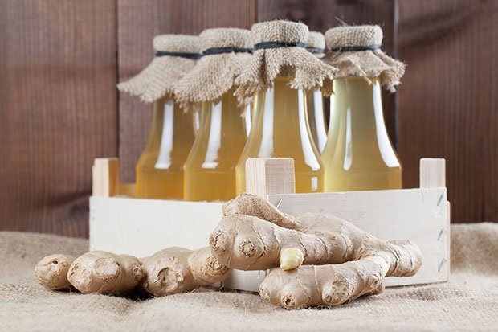

Ingwersirup - Rezept
Zurück zur Rezeptübersicht

Der Ingwersirup ist eine köstliche Zutat für Tee, Cocktails oder Desserts. Hier das Rezept zum Nachmachen.
Zutaten
- 500 g Ingwer
- 1 l Wasser
- 800 g Zucker
- Saft von 2 Zitronen
Zubereitung
- Den Ingwer schälen und in Scheiben schneiden.
- Das Wasser in einem Topf zum Kochen bringen und den Ingwer darin 30 Minuten köcheln lassen.
- Den Ingwer abseihen und den Sud beiseite stellen.
- Den Ingwersud in einen anderen Topf geben und den Zucker hinzufügen.
- Den Ingwersirup unter Rühren etwa 20 Minuten köcheln lassen, bis er dickflüssig wird.
- Den Sirup vom Herd nehmen und den Zitronensaft einrühren.
- Den Ingwersirup in sterilisierte Flaschen füllen und gut verschließen.
Tipps und Hinweise:
- Der Ingwersirup hält sich gut verschlossen etwa 1 Jahr.
- Je nach Geschmack und gewünschter Schärfe kann die Menge des Ingwers angepasst werden.